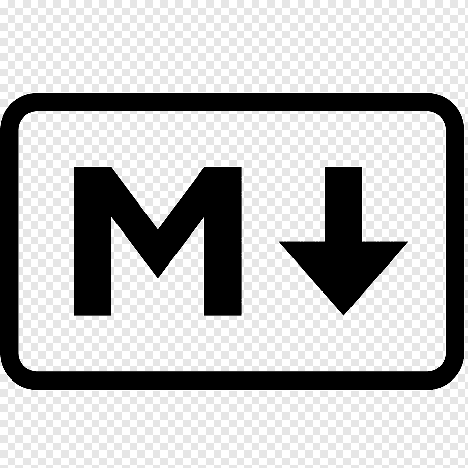

oque é a linguagem markdown
Markdown é um formato de simples de markup, isso é, de marcação de texto. A ideia é marcar um texto informando o que é importante, o que é um tópico, o que são links e imagens, sem a necessidade de utilizar marcações mais complexas, como o HTML. É um formato bastante trivial.
linguagem de CSS

Cascading Style Sheets (CSS) é uma linguagem de design feita para simplificar a apresentação e customização de páginas na internet (HTML).
linguagem HTML

HTML (Linguagem de Marcação de HiperTexto) é o bloco de construção mais básico da web. Define o significado e a estrutura do conteúdo da web. Outras tecnologias além do HTML geralmente são usadas para descrever a aparência/apresentação (CSS) ou a funcionalidade/comportamento (JavaScript) de uma página da web